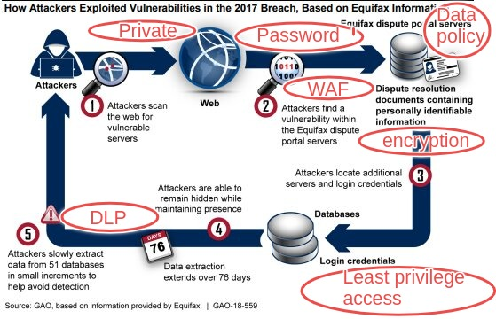

Equifax breach
Part (c) Spending money on security controls
- If you had $1 million to spend on security controls, would you spend most on preventive controls, defective controls or corrective controls?
- What kind of controls would you spend least on?
- Why?
Some suggestions / clarifications on this part of the task:
- There is no right or wrong answer. No hard and fast rule on this matter.
- there are always arguments for and against for a certain position.
- You might want to lay out some assumptions if there are any
- You can research and see what others say. If you use their arguments, please make reference to them
- You can use scenarios to illustrate your point
- You should develop your own postiion and argue for your answer
- Your argument should not be significiantly more than 2-3 pages long (if you use single line spacing)
Preventive Controls
Avoid an incident from happening
Administrative
- Data classification and labelling
- Data retention policy
- Update communication policy
- Executive priorities
- Security Awareness framework
Protect private information like Equifax systems using a susceptible version of Apache Struts web framework from being indexed by search engines. Put the information on private access website
Avoid storing sensitive information beyong the time necessary to provide the service. Unnecessary retaining of customer's information that was no longer needed lead to broader exposure of customer's information during an attack.
Equifax's IS team received alerts from US Computer Emergency Readiness Team (US-CERT) about Apache Struts framework vulnerability on Mar 8 2017, before the time of compromise on May 13 2017.
The person operating the Automated Consumer Interview System (ACIS) did not receive the alert as he/she was not part of the email recipient list. Thus, the patching process was not proactive.
Recommendation: there should be effective communication policy between the IS and IT teams.
Executive compensation rules were focused on profit, motivating them to prioritize revenue above all other considerations, including information security. Thus information security was not given much priority which lead to security breaches.
The recommendation is that IS and IT teams should report directly to either Chief Risk Officer, Chief Executive Officer or Chief Information Officer. This ensures security is represented at the executive level.
Request management to have company wide cyber security management framework and ensure its adequate staffing and budget. Equifax new security framework
Physical
Technical
- Implement WAF and DLP system
- Isolation or compartmentalization
- Encryption for Personal Indentifiable Information (PII)
- Strong password
- Least privilege access
- Knowledge in use of vulnerability scanners
- Adopt Zero-trust security model
Equifax's Automated Consumer Interview System (ACIS) system comprises 2 web servers, 2 application servers and a network-level firewall. This system was open to accepting malicious requests as it was not protected by a WAF.
A Web Application Firewall (WAF) is a layer of protection in addition to network-level firewall. It protects web applicaiton from SQL injections, cross-site scripting (XSS) and distributed Denial of Service (DDoS) attacks. WAF could have prevented the exploitation of Apache Struts vulnerability.
A Data Loss Prevention (DLS) system which identify, monitor and potentially avert unauthorized moves of sensitive data in and out of the network. DLS could have prevented the massive exfiltration 14-16 Gb of data during 76 days undetected.
Computer sub-systems should be compartmentalized using physical devices or security controls. Equifax's Automated Consumer Interview System (ACIS) application was not segmented from other unrelated databases. The Sun systems, which hosted ACIS, had shared file systems, notes or configuration files from one system and can be accessed from other systems.
Un-encrypted credentials to other sensitive databases were stored. Excessive amount of confidential information and Personal Identifiable Information (PII) was also stored.
None of the PII from the stolen data was encrypted, therefore compormising the confidentialty of the stolen PII. Encryption, truncation, masking or hashing of the critical PII is needed. Proper management of encryption keys can protect encrypted data. Even if encrypted data was stolen but encryption keys are not comporomised, event is not considered a data breach.
Some Equifax's IT system privileged accounts have weak passwords. E.g. one database has a four lowercase-letter password which matched the name of the database. A portal used for credit dispute had username "admin" and password "admin" for an administrative account.
Suggested strong password should be at least 12 characters long, a combination of uppercase, lowercase letters, numbers and symbols. Not a word that can be found in the dictionary, or name of a person, character, product or organization.
The principle of least privilege - every user in a system should be granted only a minimum set of permissions to perform the desginated task.
Equifax's Automated Consumer Interview System (ACIS) has excessive access to other systems not required for its operations. ACIS only needed access to 3 databases to function, but it was unnecessarily connected to many more.
The Equifax IS team scan the system exposed to the internet using McAfee Vulnerability Manager tool. However, the scan was on the root directory, not the subdirectory where Apache Struts framework was listed.
It was known that the detection rate of vulnerabilty scanners did not exceed 80% for most scans. Also, Apache Struts was not managed via a package manager but was distributed as a standalone JAR file.
The identification of Apache Struts framework vulnerability also require knowledge of the application URL path. When not provided, the scanner did not pick up the vulnerability.
The IS team accepted the false-negative result as confirmation that Equifax's system did not have a problem.
The components of a system must mistrust all requests from other parts of the system until they are authenticated and authorized.
Defective Controls
Detect an incident that has happened and help trace the perpetrators
Administrative
Physcial
Technical
- logs
- Intruder Detection and Prevention System (IDS/IPS)
Consult Mandiant (now part of Google cloud) security team. Both Equifax and Mandiant security teams analyzed digital forensic data using tools including Arkime (formerly known as Moloch) - by keeping a record of network's internal communication and data traffic.
Using Arkime, investigators reconstructed every step: once the attackers found the vulnerability, they installed a backdoor known as a web shell.
Eventually the intruders installed more than 30 web shells, each on a different web address. Groups known to exploit with web shells most effectively include teams with links to Chinese Intelligence. In total, the attackers ran approximately 9,000 queries on Equifax’s system, obtaining names, birth dates and social security numbers for nearly 145 million Americans. Wu Zhiyong, Wang Qian, Xu Ke and Liu Lei, members of the PLA’s 54th Research Institute, a component of the Chinese military were charged.
Automated SSL certification management tool was implemented but did not complete before the hacking incident. Avoid manual process of tracking and updating several hundred SSL certificates. This process was error prone and depended on individual responsible for IT systems.
Equifax's IDS/IPS was not able to detect malicious traffic leaving the system due to an expired SSL certificate in Nov 2016.
Lack of alerts to the IS team that the IDS/IPS was not operational for 9 months (until July 2017). Lack of warning possible as system settings allow traffic to bypass IDS/IPS in case it was unable to function.
Corrective Controls
Fixes components and systems after an incident has happened
Server Images
Real time recovery systems
Preventive Control Costs
| Control | Role / Product | Cost per year ($) |
|---|---|---|
| Private web access | new web developer | 65,000 |
| Data retention policy | new data analyst | 70,000 |
| Update communication policy | IT staff | --- |
| Executive priorities | Executive committee | --- |
| Security awareness framework | CIO, IT, IS teams | --- |
| Web Application Firewall (WAF) | Microsoft | 1,080 |
| Data Loss Protection (DLP) | ManageEngine | 795 |
| System compartmentalization | new system engineer | 100,000 |
| Encryption and strong password | new IT administrator | 80,000 |
| Least privilege access | new database administrator | 60,000 |
| Vulnerability scanner | refresher training | --- |
| zero-trust security model | CIO, IT, IS teams | --- |
Defensive Control Costs
| Control | Role / Product | Costs per year ($) |
|---|---|---|
| Network logs forensics | Mandiant (now part of Google cloud) | 50,000 |
| SSL management tool | Solar Winds | 3,346 |